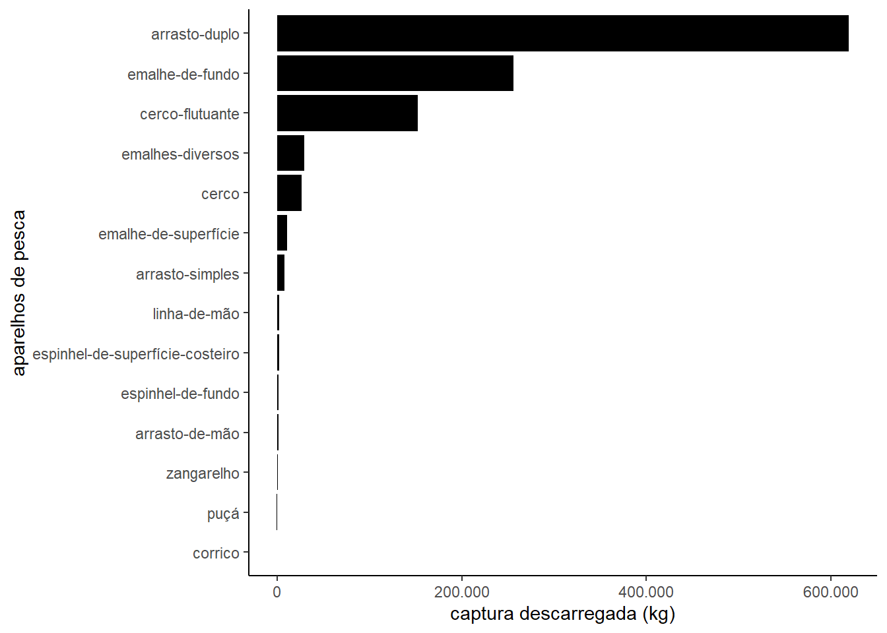
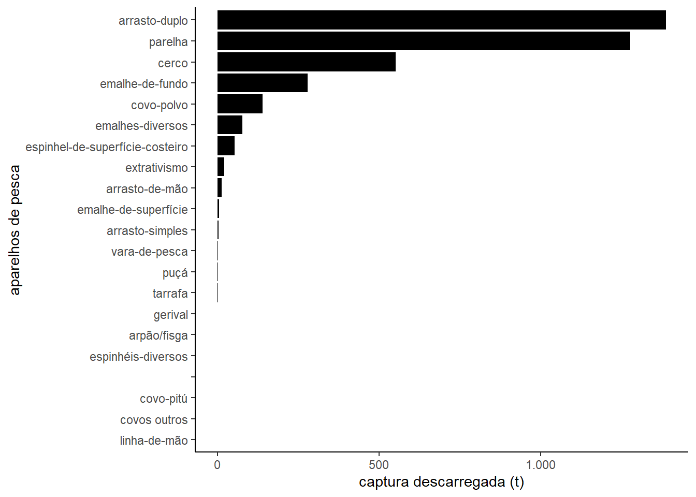
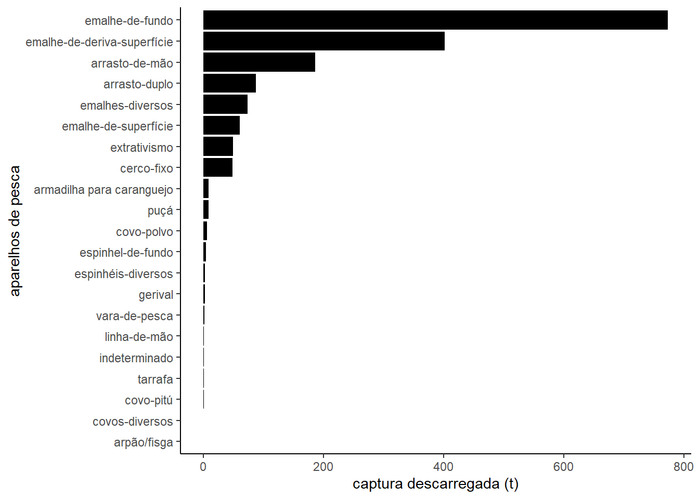

Trabalho Final - Curso de Verão IME
Relatório técnico semestral do Programa de Monitoramento da Atividade Marinha e Estuarina do Estado de São Paulo PMAP-SP
Julho a Dezembro de 2022
Introdução
O Projeto de Monitoramento da Atividade Pesqueira do Estado de São Paulo (PMAP-SP) tem como objetivo realizar, de forma integrada e sistemática, o monitoramento do desembarque pesqueiro e a caracterização socioeconômica e estrutural da pesca comercial nos municípios da área abrangida pelo projeto onde as respectivas localidades pesqueiras sofrem interferência das atividades de exploração e produção de petróleo e gás. Com esta abordagem será possível obter informações adequadas e suficientes para se diagnosticar, qualificar e quantificar os impactos decorrentes das interferências entre as atividades de exploração e produção e a atividade pesqueira, tanto para o cenário atual quanto para cenários futuros, considerando eventuais mudanças de padrões de desenvolvimento.
A seguir são apresentados a metodologia e os resultados do monitoramento no período de Julho a Dezembro de 2022.
Metodologia
Coleta dos dados pesqueiros
No período deste relatório foram monitorados um total de 15 municípios em relação a sua atividade pesqueira. Os municípios foram divididos entre Litoral Norte, Litoral Centro e Litoral Sul.
Os dados pesqueiros são obtidos por método censitário através de entrevistas com pescadores, realizadas por Agentes de Campo no momento da operação de descarga de pescado (FAO 1999; Ávila-da-Silva et al. 2007). Trata-se de um monitoramento participativo, uma vez que os pescadores e mestres de embarcações fornecem as informações de forma voluntária mediante uma declaração de ética e uso de dados do Instituto de Pesca. Os Agentes de Campo, funcionários do projeto, são recrutados dentro das comunidades pesqueiras em que atuam.
Na entrevista são anotadas, por viagem ou saída de pesca, dados de captura descarregada por categoria de pescado, petrecho de pesca utilizado e esforço pesqueiro empregado, e informações sobre o período e áreas onde foram realizadas as operações de pesca. Sempre que possível, também são registrados os preços de primeira comercialização, ou preço pago ao produtor, por categoria de pescado.
O termo “categoria de pescado” é utilizado ao invés de “espécie” pois, nas informações fornecidas pelos pescadores, a indicação do tipo de pescado capturado nem sempre aponta com exatidão uma espécie, no sentido biológico. Muitas vezes o nome comum, aqui chamado de categoria de pescado, refere-se a um gênero, a uma família ou até a um nível taxonômico mais amplo.
Todos os dados obtidos nas entrevistas são registrados no aplicativo ProPesqMOB, seguindo as orientações de preenchimento definidas por protocolo. Uma vez inseridos no ProPesqMOB, os dados são enviados pela internet para o Sistema de Informações Pesqueiras ProPesqWEB, e ficam disponíveis para as etapas de validação, depuração, armazenamento e disponibilização.
Armazenamento, Tratamento e Disponibilização dos dados
O tratamento das informações obtidas em campo se dá a partir da visita semanal dos Monitores de Campo que percorreram sua área de trabalho para acompanhar a atuação dos Agentes de Campo, promover sua capacitação continuada e posterior validação das informações a serem inseridas no ProPesqWEB.
A depuração dos dados é efetuada pela Analista de Dados, que analisa o conjunto de informações validadas através de técnicas de análise exploratória buscando identificar valores extremos ou fora dos padrões esperados para um determinado período, pescaria ou localidade.
Apenas após esta sequência de verificações, os dados são empregados para a realização de estudos e disponibilizados de forma agrupada no banco de dados de acesso público no website do Programa de Monitoramento da Atividade Pesqueira do Instituto de Pesca em www.propesq.pesca.sp.gov.br.
A atividade pesqueira, dividida entre Litoral Norte, Centro e Sul, foi caracterizada pelo do número de unidades produtivas registradas (embarcações, no caso de pesca embarcada ou pescadores, no caso de extrativismo manual), número de viagens de pesca, aparelhos de pesca utilizados, produção pesqueira obtida e categorias de pescado capturadas.
Resultados
Litoral Norte
O monitoramento dos municípios que compõem a área de estudo resultou, no período analisado, no registro global de 13,7 mil viagens de pesca. Os aparelhos de pesca mais representativos em termos kg descarregado no período foram arrasto-duplo, emalhe-de-fundo e cerco-flutuante (Figura 1).

O total capturado no período foi de 1111.2 t. Os volumes de captura por categoria de pescado encontram-se na Figura 2. As principais categorias de pescado do período foram Camarão-sete-barbas, Corvina e Espada.
| pescado | kg | |
|---|---|---|
| 22 | Camarão-sete-barbas | 485144.70 |
| 30 | Corvina | 199827.90 |
| 33 | Espada | 69261.50 |
| 21 | Camarão-rosa | 39698.00 |
| 46 | Mistura | 36874.30 |
| 90 | Sororoca | 27084.25 |
| 26 | Carapau | 26957.40 |
| 20 | Camarão-legítimo | 22737.57 |
| 91 | Tainha | 20005.15 |
| 38 | Guaivira | 15228.00 |
| 64 | Pescada-foguete | 14405.30 |
| 11 | Betara | 11990.10 |
| 69 | Porco-chinelo | 11105.90 |
| 15 | Bonito-pintado | 8087.70 |
| 34 | Galo | 7005.80 |
| 17 | Cabrinha | 6626.20 |
| 81 | Sardinha-bandeira | 6365.00 |
| 66 | Pirajica | 6316.30 |
| 63 | Pescada-cambucu | 6214.06 |
| 68 | Porco | 6046.85 |
| 3 | Agulha | 5809.80 |
| 42 | Machote | 5725.60 |
| 65 | Pescadas agrupadas | 5421.80 |
| 13 | Bonito-cachorra | 3735.64 |
| 18 | Cação-rola-rola | 3724.20 |
| 41 | Lula | 3679.25 |
| 75 | Robalo-flecha | 3233.28 |
| 32 | Enchova | 2974.58 |
| 43 | Maria-luíza | 2719.35 |
| 9 | Bagre-branco | 2310.40 |
| 29 | Cavala | 2270.47 |
| 36 | Goete | 2241.40 |
| 5 | Anequim | 2216.00 |
| 40 | Linguado | 2000.16 |
| 58 | Paru | 1943.80 |
| 67 | Polvo | 1717.03 |
| 60 | Pescada-amarela | 1679.70 |
| 51 | Oveva | 1628.00 |
| 37 | Gordinho | 1604.00 |
| 62 | Pescada-branca | 1539.28 |
| 94 | Trilha | 1423.90 |
| 23 | Cambeva | 1403.60 |
| 61 | Pescada-banana | 1400.00 |
| 100 | Xixarro | 1394.00 |
| 86 | Siri-azul | 1280.18 |
| 98 | Xaréu | 1187.00 |
| 19 | Cações agrupados | 1146.27 |
| 95 | Vermelho-henrique | 1099.87 |
| 96 | Viola | 1083.00 |
| 71 | Prejereba | 1048.94 |
| 56 | Parati | 1043.90 |
| 93 | Tortinha | 929.00 |
| 99 | Xaréu-branco | 791.00 |
| 49 | Olho-de-boi | 681.58 |
| 54 | Pampo-galhudo | 661.20 |
| 31 | Dourado | 648.60 |
| 83 | Sari-sari | 648.30 |
| 87 | Siri-candeia | 637.90 |
| 97 | Xarelete | 622.00 |
| 52 | Palombeta | 611.50 |
| 12 | Bicuda | 594.70 |
| 53 | Pampo | 532.00 |
| 89 | Siris agrupados | 435.50 |
| 16 | Bonitos agrupados | 404.60 |
| 27 | Carapeba | 379.00 |
| 35 | Garoupa | 376.50 |
| 8 | Bagre-amarelo | 344.00 |
| 44 | Maria-mole | 342.00 |
| 28 | Caratinga | 270.00 |
| 7 | Bagre | 269.50 |
| 73 | Raias agrupadas | 262.00 |
| 50 | Olho-de-cão | 199.00 |
| 24 | Cangoá | 162.00 |
| 10 | Baiacu | 155.40 |
| 92 | Tira-vira | 140.20 |
| 76 | Robalo-peva | 136.40 |
| 48 | Olhete | 135.30 |
| 84 | Savelha | 129.00 |
| 77 | Roncador | 128.00 |
| 82 | Sargo | 117.40 |
| 85 | Sernambiguara | 112.00 |
| 6 | Atuns agrupados | 110.00 |
| 14 | Bonito-gaiado | 110.00 |
| 72 | Raia-emplastro | 100.00 |
| 55 | Parambiju | 82.00 |
| 47 | Namorado | 64.00 |
| 25 | Caranha | 45.00 |
| 79 | Salema | 40.00 |
| 74 | Robalo | 36.20 |
| 59 | Peixe-voador | 21.00 |
| 78 | Sabão | 21.00 |
| 4 | Agulhão-vela platypterus | 20.00 |
| 45 | Marimbá | 14.00 |
| 57 | Pargo-rosa | 13.00 |
| 88 | Siri-pintado | 9.00 |
| 80 | Sapateira | 8.10 |
| 2 | Abrótea | 8.00 |
| 39 | Lagostim | 8.00 |
| 70 | Porco-peludo | 3.00 |
Considerando-se o preço de primeira comercialização, estimou-se que toda a captura do período gerou uma receita de aproximadamente R$ 12,7 milhões.
Litoral Centro
O monitoramento dos municípios que compõem a área de estudo, resultou, no período analisado, no registro global de 18,7 mil viagens de pesca. Os aparelhos de pesca mais representativos em termos de número de viagens no período foram arrasto-duplo, parelha e cerco (Figura 3).

O total capturado no período foi de 3813.7 t. Os volumes de captura por categoria de pescado encontram-se na Figura 4. As principais categorias de pescado do período foram Camarão-sete-barbas, Corvina e Pescada-foguete.
| Categoria de pescado | Captura (t) | |
|---|---|---|
| 25 | Camarão-sete-barbas | 892.626 |
| 39 | Corvina | 547.090 |
| 84 | Pescada-foguete | 336.615 |
| 71 | Palombeta | 321.555 |
| 24 | Camarão-rosa | 186.246 |
| 88 | Polvo | 148.072 |
| 64 | Mistura | 137.867 |
| 90 | Porco | 106.410 |
| 70 | Oveva | 98.736 |
| 42 | Espada | 96.888 |
| 47 | Goete | 82.220 |
| 16 | Cabrinha | 78.455 |
| 12 | Betara | 62.352 |
| 82 | Pescada-cambucu | 55.766 |
| 49 | Guaivira | 53.736 |
| 74 | Parati | 53.254 |
| 81 | Pescada-branca | 47.677 |
| 9 | Bagre-branco | 40.357 |
| 34 | Cavalinha | 34.500 |
| 124 | Xarelete | 30.800 |
| 118 | Trilha | 29.399 |
| 44 | Galo | 27.715 |
| 77 | Paru | 24.668 |
| 43 | Espadarte | 20.900 |
| 104 | Sardinha-verdadeira | 20.800 |
| 30 | Carapau | 20.795 |
| 17 | Cação-azul | 16.280 |
| 99 | Roncador | 15.763 |
| 6 | Anequim | 14.200 |
| 48 | Gordinho | 13.555 |
| 28 | Caranguejo-uçá | 13.128 |
| 55 | Lula | 12.485 |
| 23 | Camarão-legítimo | 11.012 |
| 93 | Raia-emplastro | 10.375 |
| 32 | Caratinga | 8.406 |
| 33 | Castanha | 8.300 |
| 8 | Bagre-amarelo | 8.265 |
| 107 | Savelha | 8.000 |
| 115 | Tira-vira | 7.342 |
| 91 | Porco-chinelo | 6.210 |
| 13 | Bicuda | 6.029 |
| 52 | Linguado | 5.946 |
| 2 | Abrótea | 5.872 |
| 98 | Robalo-peva | 5.856 |
| 97 | Robalo-flecha | 5.743 |
| 106 | Sari-sari | 5.424 |
| 114 | Tainha | 5.332 |
| 122 | Vermelho-henrique | 4.422 |
| 68 | Olho-de-cão | 4.420 |
| 80 | Pescada-banana | 4.293 |
| 61 | Mexilhão | 3.956 |
| 113 | Sororoca | 3.543 |
| 62 | Mexilhão-do-mangue | 3.366 |
| 22 | Cações agrupados | 3.158 |
| 21 | Cação-rola-rola | 3.003 |
| 41 | Enchova | 2.840 |
| 67 | Olhete | 2.800 |
| 59 | Maria-luíza | 2.294 |
| 26 | Cambeva | 2.216 |
| 76 | Pargo-rosa | 2.204 |
| 123 | Viola | 1.830 |
| 79 | Pescada-amarela | 1.743 |
| 65 | Namorado | 1.633 |
| 31 | Carapeba | 1.596 |
| 60 | Maria-mole | 1.458 |
| 27 | Cangoá | 1.434 |
| 69 | Ostra | 1.269 |
| 112 | Siris agrupados | 1.049 |
| 53 | Linguado-areia | 0.890 |
| 89 | Polvo-saquinho | 0.809 |
| 45 | Galo-de-penacho | 0.800 |
| 85 | Pescadas agrupadas | 0.618 |
| 7 | Bagre | 0.617 |
| 4 | Albacora-branca | 0.527 |
| 125 | Xaréu | 0.516 |
| 72 | Pampo | 0.499 |
| 92 | Prejereba | 0.463 |
| 83 | Pescada-dentão | 0.456 |
| 14 | Bonito-pintado | 0.400 |
| 38 | Corcoroca | 0.400 |
| 116 | Tortinha | 0.369 |
| 96 | Raias agrupadas | 0.348 |
| 119 | Trombeta | 0.294 |
| 101 | Sapateira | 0.260 |
| 105 | Sargo | 0.236 |
| 40 | Dourado | 0.228 |
| 78 | Peixe-prego | 0.202 |
| 10 | Baiacu | 0.168 |
| 126 | Xaréu-branco | 0.125 |
| 36 | Cioba | 0.087 |
| 73 | Pararê | 0.077 |
| 35 | Chernes agrupados | 0.075 |
| 11 | Berbigão | 0.068 |
| 5 | Albacora-de-laje | 0.056 |
| 120 | Trombeta-vermelha | 0.050 |
| 66 | Nundiá | 0.047 |
| 54 | Lua | 0.045 |
| 117 | Traíra | 0.042 |
| 46 | Garoupa | 0.041 |
| 29 | Caranha | 0.040 |
| 63 | Miraguaia | 0.038 |
| 110 | Siri-fedido | 0.035 |
| 15 | Bonitos agrupados | 0.029 |
| 20 | Cação-lombo-preto | 0.028 |
| 86 | Pirajica | 0.023 |
| 51 | Lagostim | 0.021 |
| 58 | Mandi | 0.019 |
| 100 | Salema | 0.019 |
| 108 | Siri-azul | 0.016 |
| 111 | Siri-patola | 0.015 |
| 57 | Machote | 0.015 |
| 18 | Cação-cabeça-chata | 0.012 |
| 94 | Raia-manteiga | 0.010 |
| 19 | Cação-galha-preta | 0.008 |
| 102 | Saquaritá | 0.008 |
| 95 | Raia-ticonha | 0.007 |
| 37 | Congro-rosa | 0.006 |
| 75 | Parati-barbudo | 0.005 |
| 103 | Sardinha-cascuda | 0.005 |
| 56 | Lula-branca | 0.005 |
| 87 | Pitú-de-iguape | 0.004 |
| 50 | Lagosta | 0.004 |
| 3 | Agulha | 0.003 |
| 109 | Siri-espadinha | 0.002 |
| 121 | Ubarana | 0.001 |
| 1 | 0.000 |
Considerando-se o preço de primeira comercialização, estimou-se que toda a captura do período gerou uma receita de aproximadamente R$ 47,3 milhões.
Litoral Sul
O monitoramento dos municípios que compõem a área de estudo resultou, no período analisado, no registro global de viagens de pesca. Os aparelhos de pesca mais representativos em termos de número de viagens no período foram emalhe-de-fundo, emalhe-de-deriva-superfície e arrasto-de-mão (Figura 5).

O total capturado no período foi de 1715.9 t. Os volumes de captura por categoria de pescado encontram-se na Figura 6. As principais categorias de pescado do período foram Manjuba-de-iguape, Corvina e Pescada-foguete.
| Categoria de pescado | Captura (t) | |
|---|---|---|
| 40 | Manjuba-de-iguape | 565.066 |
| 27 | Corvina | 312.869 |
| 63 | Pescada-foguete | 159.248 |
| 8 | Bagre-branco | 136.640 |
| 82 | Tainha | 75.976 |
| 19 | Camarão-sete-barbas | 66.511 |
| 10 | Betara | 50.838 |
| 47 | Mistura | 50.634 |
| 49 | Ostra | 44.594 |
| 50 | Oveva | 31.688 |
| 81 | Sororoca | 27.758 |
| 56 | Paru | 20.799 |
| 30 | Espada | 14.747 |
| 13 | Cabrinha | 12.481 |
| 33 | Goete | 11.907 |
| 71 | Robalo-peva | 11.888 |
| 20 | Caranguejo-uçá | 11.128 |
| 18 | Camarão-rosa | 9.538 |
| 35 | Guaivira | 8.390 |
| 75 | Sardinha-bandeira | 8.357 |
| 80 | Siri-azul | 8.317 |
| 55 | Parati | 8.216 |
| 39 | Manjuba-chata | 6.585 |
| 66 | Polvo | 6.171 |
| 42 | Manjubas agrupadas | 6.096 |
| 78 | Sari-sari | 5.976 |
| 58 | Pescada-amarela | 5.178 |
| 70 | Robalo-flecha | 4.577 |
| 60 | Pescada-branca | 3.762 |
| 62 | Pescada-dentão | 3.688 |
| 23 | Carapeba | 2.808 |
| 14 | Cações agrupados | 2.424 |
| 15 | Camarão-estuarino | 2.355 |
| 59 | Pescada-banana | 2.334 |
| 34 | Gordinho | 1.890 |
| 68 | Prejereba | 1.719 |
| 61 | Pescada-cambucu | 1.534 |
| 44 | Mexilhão | 1.018 |
| 43 | Maria-luíza | 0.987 |
| 86 | Trilha | 0.880 |
| 36 | Linguado | 0.841 |
| 45 | Mexilhão-do-mangue | 0.725 |
| 25 | Cascudo | 0.589 |
| 84 | Tortinha | 0.566 |
| 85 | Traíra | 0.534 |
| 51 | Palombeta | 0.510 |
| 7 | Bagre-amarelo | 0.500 |
| 37 | Linguado-areia | 0.430 |
| 12 | Bonitos agrupados | 0.411 |
| 41 | Manjubas | 0.400 |
| 69 | Raias agrupadas | 0.321 |
| 4 | Almeja | 0.268 |
| 65 | Pitú-de-iguape | 0.259 |
| 38 | Mandi | 0.203 |
| 46 | Miraguaia | 0.167 |
| 21 | Caranha | 0.157 |
| 77 | Sargo | 0.142 |
| 6 | Bagre-africano | 0.136 |
| 67 | Porco | 0.130 |
| 31 | Galo | 0.127 |
| 54 | Pararê | 0.117 |
| 53 | Parambiju | 0.106 |
| 32 | Garoupa | 0.097 |
| 28 | Dourado | 0.074 |
| 17 | Camarão-legítimo | 0.067 |
| 11 | Bicuda | 0.063 |
| 89 | Xaréu | 0.056 |
| 2 | Acará | 0.040 |
| 9 | Baiacu | 0.032 |
| 52 | Pampo | 0.029 |
| 1 | Abrótea | 0.025 |
| 76 | Sardinha-verdadeira | 0.025 |
| 29 | Enchova | 0.024 |
| 64 | Pirajica | 0.024 |
| 83 | Tilápia | 0.020 |
| 26 | Cioba | 0.017 |
| 3 | Agulhão-branco | 0.016 |
| 22 | Carapau | 0.013 |
| 57 | Peixe-prego | 0.013 |
| 73 | Saguá | 0.012 |
| 48 | Nundiá | 0.007 |
| 79 | Sernambiguara | 0.006 |
| 74 | Salema | 0.006 |
| 16 | Camarão-gigante-da-Malásia | 0.004 |
| 87 | Viola | 0.004 |
| 88 | Xarelete | 0.003 |
| 24 | Caratinga | 0.003 |
| 72 | Roncador | 0.002 |
| 5 | Bagre | 0.002 |
Considerando-se o preço de primeira comercialização, estimou-se que toda a captura do período gerou uma receita de aproximadamente R$ 9 milhões.
Considerações finais
No período do presente relatório, a captura de algumas categorias de pescado pode ter sido afetada pela legislação vigente que determina os seguintes defesos na região de estudo:
Instrução Normativa IBAMA nº 105, de 20 de julho de 2006: Determinação do período de defeso para mexilhões (Perna perna) de 1º de setembro a 31 de dezembro.
Portaria IBAMA nº 52, de 30 de setembro de 2003: Determinação do período de defeso do Caranguejo-Uçá (Ucides cordatus) de 1º de outubro a 30 de novembro para todos os indivíduos e no período de 1º a 31 de dezembro somente para as fêmeas.
Portaria IBAMA nº 53, de 30 de setembro de 2003: Determinação do período de defeso do Guaiamum (Cardisoma guanhumi) de 1º de outubro a 31 de março.
Portaria SUDEPE nº N-40, de 16 de dezembro de 1986: Determinação do período de defeso para ostras de 18 de dezembro a 18 de fevereiro.